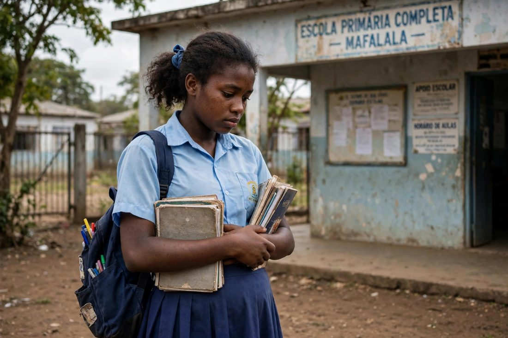

Introdução
O nosso grupo escolheu o tema “Gravidez Precoce e Abandono Escolar” porque temos presenciado situações de colegas que desistiram da escola devido à gravidez precoce. Esta realidade despertou em nós a preocupação com o futuro dos adolescentes e com as dificuldades que enfrentam para continuar os estudos e alcançar os seus objectivos.
A gravidez precoce constitui um desafio social que pode trazer novas responsabilidades e dificuldades para os adolescentes, sobretudo quando não existe apoio familiar, escolar e comunitário. Em alguns casos, essas dificuldades contribuem para a interrupção dos estudos, comprometendo as oportunidades de formação académica e profissional dos jovens.
Por sua vez, o abandono escolar pode limitar as oportunidades de acesso à educação e ao emprego, dificultando a concretização dos projectos de vida dos adolescentes. Por isso, consideramos importante compreender as causas e as consequências destes problemas, bem como identificar medidas que contribuam para a sua prevenção.
Deste modo, o presente trabalho tem como finalidade sensibilizar a comunidade escolar para a prevenção da gravidez precoce e a redução do abandono escolar, procurando encontrar soluções possíveis que ajudem os nossos colegas a tomar decisões responsáveis e a valorizar a educação. Pretendemos também destacar a importância do apoio da família, da escola e da comunidade, para que as adolescentes grávidas e as mães jovens tenham oportunidades de continuar os seus estudos e construir um futuro melhor.
Porque escolhemos este tema
Temos presenciado situações de colegas que abandonaram a escola devido à gravidez precoce. Sentimos a necessidade de investigar as causas e as consequências deste problema. O nosso principal propósito é apresentar soluções possíveis que ajudem os nossos colegas a prevenir a gravidez precoce, a tomar decisões responsáveis e a valorizar a educação, defendendo que a gravidez não deve significar o fim dos sonhos nem das oportunidades de aprendizagem de qualquer jovem.
Objectivos
Objectivo geral
Identificar possíveis soluções para prevenir a gravidez precoce e reduzir o abandono escolar, sensibilizando os adolescentes para a importância da prevenção, da educação e da construção de um futuro melhor.
Objectivos específicos
- Identificar as principais causas da gravidez precoce entre os adolescentes.
- Compreender as consequências da gravidez precoce na vida pessoal, familiar e académica dos jovens.
- Analisar a relação entre a gravidez precoce e o abandono escolar, tendo em conta as situações observadas no nosso meio escolar.
- Sensibilizar os nossos colegas sobre a importância de tomar decisões responsáveis e de procurar informações correctas sobre a saúde sexual e reprodutiva.
- Propor medidas de prevenção da gravidez precoce, através da educação, do diálogo familiar e do acesso a informações adequadas.
- Encontrar soluções que ajudem os adolescentes a evitar a gravidez precoce e a continuar os seus estudos.
- Incentivar a escola, as famílias e a comunidade a apoiarem as estudantes grávidas e as mães adolescentes, para que possam prosseguir a sua formação académica.
- Contribuir para a redução do abandono escolar e para a criação de um ambiente escolar mais inclusivo, respeitador e favorável à aprendizagem.
Desenvolvimento
1. Conceito de gravidez precoce e abandono escolar
A gravidez precoce é aquela que ocorre durante a adolescência, numa fase em que os jovens ainda se encontram em processo de desenvolvimento físico, emocional e social. Esta situação pode trazer novas responsabilidades e desafios, especialmente quando a adolescente não dispõe de informação adequada e de apoio familiar e social.
O abandono escolar consiste na interrupção dos estudos antes da conclusão do nível de ensino que o aluno pretendia alcançar. Este fenómeno pode ocorrer por diferentes motivos, incluindo dificuldades económicas, problemas familiares, gravidez precoce e falta de apoio para continuar a estudar.
2. Principais causas da gravidez precoce
- Falta de informação: alguns adolescentes não possuem conhecimentos suficientes sobre a saúde sexual e reprodutiva e sobre a prevenção da gravidez.
- Pressão social e dos parceiros: alguns jovens podem sentir-se pressionados a iniciar relações sexuais sem estarem preparados.
- Dificuldades de comunicação familiar: a falta de diálogo entre pais e filhos pode dificultar o esclarecimento de dúvidas e a procura de orientação.
- Condições económicas desfavoráveis: a pobreza e a dependência financeira podem aumentar a vulnerabilidade de alguns adolescentes.
- Violência e abuso sexual: situações de violência sexual também podem resultar em gravidez na adolescência e exigem protecção e apoio adequados.
3. Consequências da gravidez precoce
A gravidez durante a adolescência pode trazer consequências para diferentes áreas da vida dos jovens. No âmbito escolar, a adolescente pode enfrentar dificuldades para frequentar as aulas, realizar trabalhos e preparar-se para os exames devido às consultas de saúde, às responsabilidades familiares e aos cuidados com o bebé.
No âmbito social e emocional, pode enfrentar discriminação, críticas, isolamento e preocupações relacionadas com o futuro. Na área da saúde, a gravidez na adolescência exige acompanhamento adequado, pois pode apresentar riscos que devem ser avaliados pelos profissionais de saúde.
Contudo, estas dificuldades não significam que todas as adolescentes grávidas terão os mesmos problemas. Com acompanhamento de saúde e apoio familiar e escolar, é possível reduzir obstáculos e favorecer a continuidade dos estudos.
4. Relação entre a gravidez precoce e o abandono escolar
A gravidez precoce pode contribuir para o abandono escolar quando a adolescente enfrenta dificuldades para conciliar os estudos com a gravidez e, posteriormente, com os cuidados da criança. A falta de recursos financeiros, o preconceito, a ausência de apoio familiar e as dificuldades de acesso à escola podem agravar esta situação.
Em alguns casos, a estudante pode sentir-se obrigada a interromper os estudos para cuidar do bebé ou ajudar nas despesas familiares. Noutros, pode afastar-se da escola por medo de críticas ou por não encontrar condições adequadas para continuar a frequentar as aulas.
É importante reconhecer que o abandono escolar não é uma consequência inevitável da gravidez. A criação de condições de apoio e a promoção de um ambiente escolar inclusivo podem ajudar as adolescentes grávidas e as mães jovens a prosseguir os seus estudos.
5. Consequências do abandono escolar
O abandono escolar pode afectar o futuro dos adolescentes, limitando as suas oportunidades de formação e de acesso ao emprego. A interrupção dos estudos pode também dificultar a aquisição de conhecimentos e competências necessários para a autonomia financeira e para a participação activa na sociedade.
Além disso, quando os jovens deixam a escola sem concluir a sua formação, podem enfrentar maiores dificuldades para concretizar os seus projectos de vida. Por essa razão, prevenir o abandono escolar é importante para o desenvolvimento individual, familiar e social.
